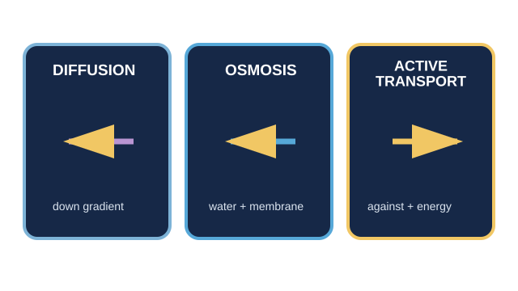

LAUNCH Science · W6L3 · lesson resources
Sort the transport clues
Choose one shared task or resource within the current lesson stage. Keep the lesson’s 40-minute timetable and 15-minute independent work.
We Do · Sort the transport clues
Choose diffusion, osmosis, active transport or need more evidence. Give the deciding clue.
- A Oxygen moves from higher concentration in air into blood.
- B Water crosses a partially permeable membrane from a solution more dilute than the cell contents.
- C Ions enter against their gradient using energy from respiration.
- D A substance crosses a membrane. No other clue is given.
Discuss, point, write or dictate your first reason. Use one example first; extend only if there is time.
Reveal shared reasoning after an attempt
A: diffusion — down the oxygen gradient.
B: osmosis — water, membrane, dilute to concentrated.
C: active transport — against gradient using cellular energy.
D: insufficient evidence — ask what moves, which gradient and whether energy is needed.
This page keeps your writing while it stays open. It does not save or send it.
Model explanation and diagram

Read the evidence before naming the process. Some statements belong to more than one process; some scenarios do not contain enough information.
Watch for: “Water only” points to osmosis, but the membrane and relative solutions still matter. Movement through a membrane alone does not prove active transport.
Give a smaller support cue
Ask: what moves, which way compared with the gradient, and is cellular energy needed? If a clue is missing, say what more you need to know.
Optional video · Active transport
Watch for: What two clues distinguish active transport from diffusion?
Use a short relevant extract within I Do, then pause for an explanation. The clip replaces part of the modelling time.
Open the freesciencelessons video in a new tab
No-video version · use the same question

Active transport causes net movement against the concentration gradient and requires energy released by respiration. The cell type alone does not prove the mechanism.
Internet is needed for the optional clip. It is concept teaching; viewing it is not completion of a practical.